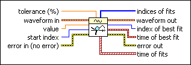
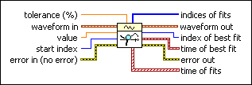

Search Waveform VI
Owning Palette: Analog Waveform VIs and Functions
Requires: Base Development System
Returns the time value in x for the value specified.

 Add to the block diagram Add to the block diagram |
 Find on the palette Find on the palette |
Owning Palette: Analog Waveform VIs and Functions
Requires: Base Development System
Returns the time value in x for the value specified.

| Add to the block diagram |
Find on the palette |
 |
tolerance is the percent tolerance on the input value for a match. The default is 0.01. |
 |
waveform in is the waveform you want to search for a particular data value. The default is empty. |
|
value is the data value for which you want to search. The default is 0. |
 |
start index defines the point in the waveform data where the search begins. The default is 0, the beginning of the waveform. The VI returns an error if start index is out of range for the waveform. |
 |
error in describes error conditions that occur before this node runs. This input provides standard error in functionality. |
| indices of fits is an array of indexes of all values that meet the input value and tolerance criteria. | |
 |
waveform out returns waveform in unchanged. |
 |
index of best fit is the index of the data value that best matches the input value. |
 |
time of best fit is the time value where the data value that best matches the input value was found. |
 |
error out contains error information. This output provides standard error out functionality. |
| time of fits is an array of all time values of all values that meet the input value and tolerance criteria. |
Refer to the Waveform - Search VI in the labview\examples\Waveform directory for an example of using the Search Waveform VI.
 Open example Find related examples
Open example Find related examples